Authorization means to provide the required access as per their profile.
It also means to provide access to a group of similar profiles.
Types of authorization mechanism:
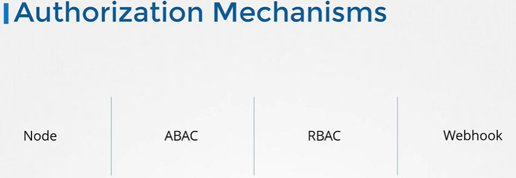Node:
Kubelet services access the API server to manage the cluster and check the other components and also provide status of the nodes.
When it reaches the API server the request is approved by the node authorizer
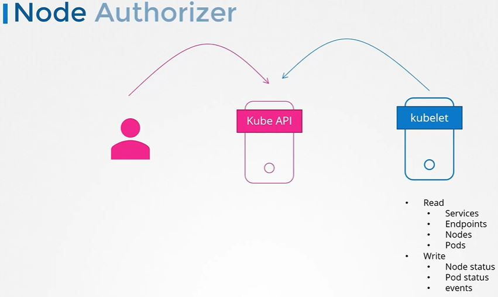ABAC:
It is a set of permissions allotted to a user or a group user to perform actions on K8s cluster.
It is a JSON format file, which contains a set of policies and can be passed to the Kube API server.
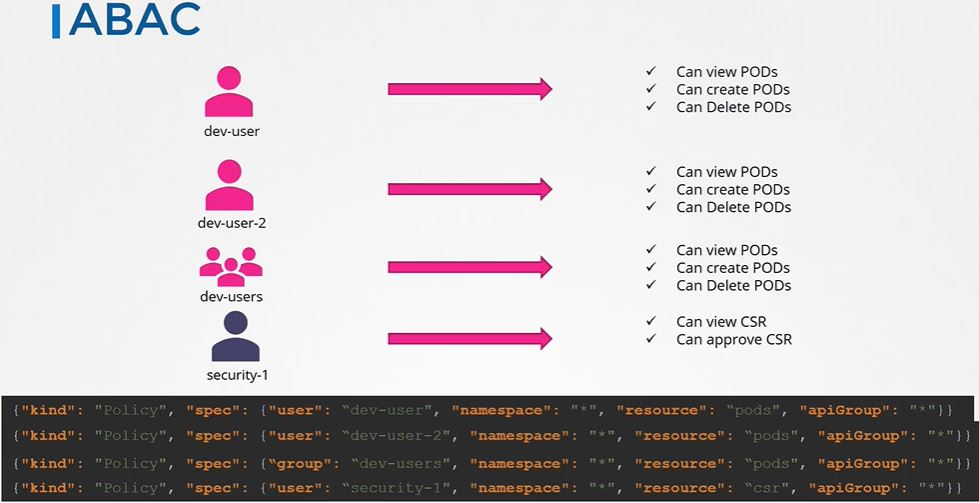RBAC full description:
Here we create a role with a set of permissions then associate the user or users with that role.
If we need to make changes, we can edit the role and permission changes to reflect on the users.
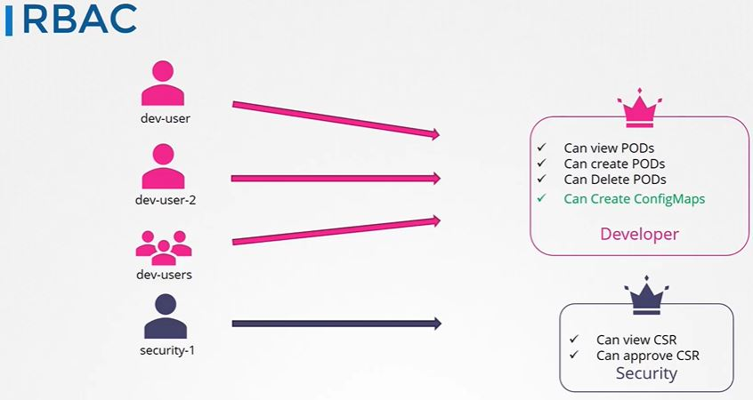How to create a ROLE:
Role object is created from a role definition file.
Below there is a role created for developer users.
So here two rules were added where developer users can create, view, delete pod and create configMaps.
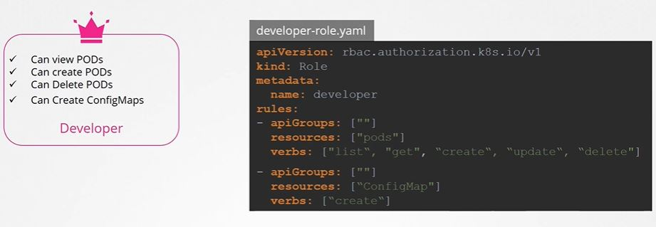We can create rule: kubectl create -f developer-role.yaml
Role Binding:
Now as we have created the role, we need to link the user with the role.
We need to create another object called RoleBinding.
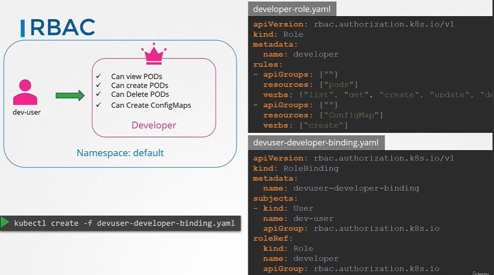Note: Role and RoleBinding fall under the scope of namespace. If we do not specify namespace, it will allow the developer user to access the Pods and ConfigMap under the scope of the default namespace. But if we need to specify namespace, we can mention it under metadata in the definition file.
We can run below commands to check the role and role bindings.
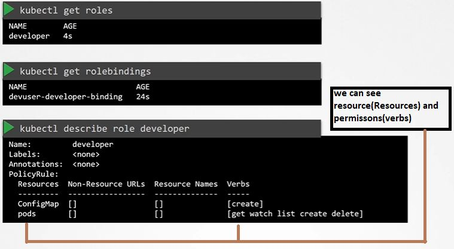 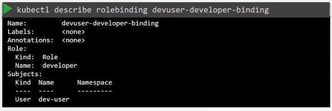Check Access:
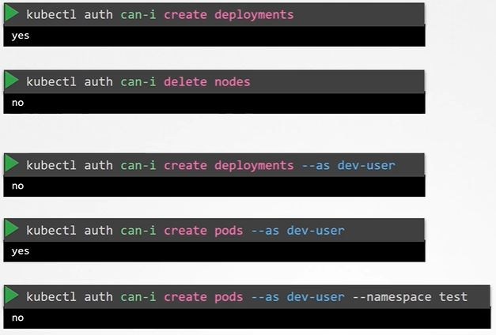Resource Names:
We can restrict access with the namespace as well.
Let's see in the picture below that we have 5 pods within the same namespace and we want to restrict access to Blue and Orange Pod. We can do it by specifying - resourceName.
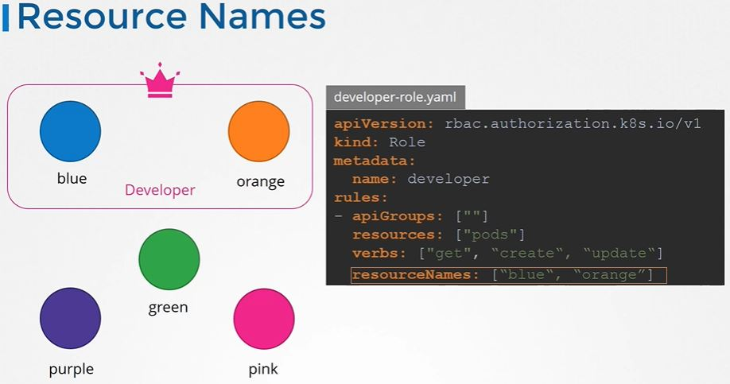Webhook:
If we want to outsource the authorization and don't want to be authorized through the K8s inbuilt mechanism, we can use webhook.
Open Policy Agent is one of the examples.
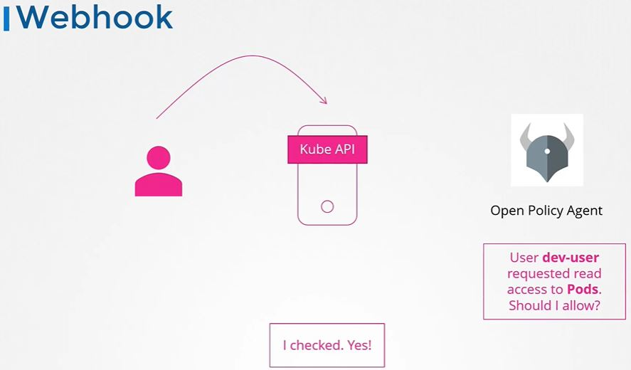Note: There are 2 more modes AlwaysAllow and AlwaysDeny.
Authorization Modes:
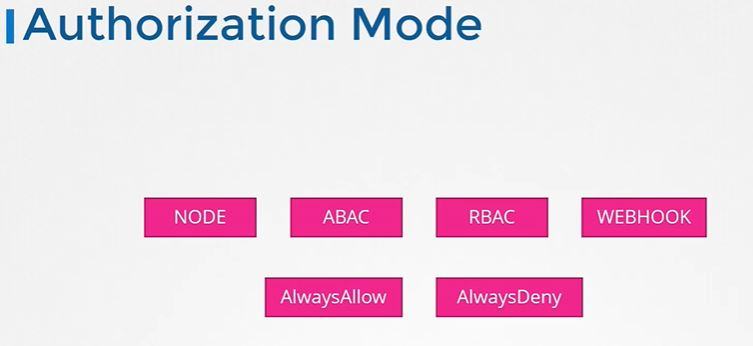AlwaysAllow: Kube APIserver allows everything to access everything.
AlwaysDeny: Kube APIserver denies everything to access everything.
It is mentioned below in the APIserver manifest file.
Also if we do not specify anything it always allows by default.
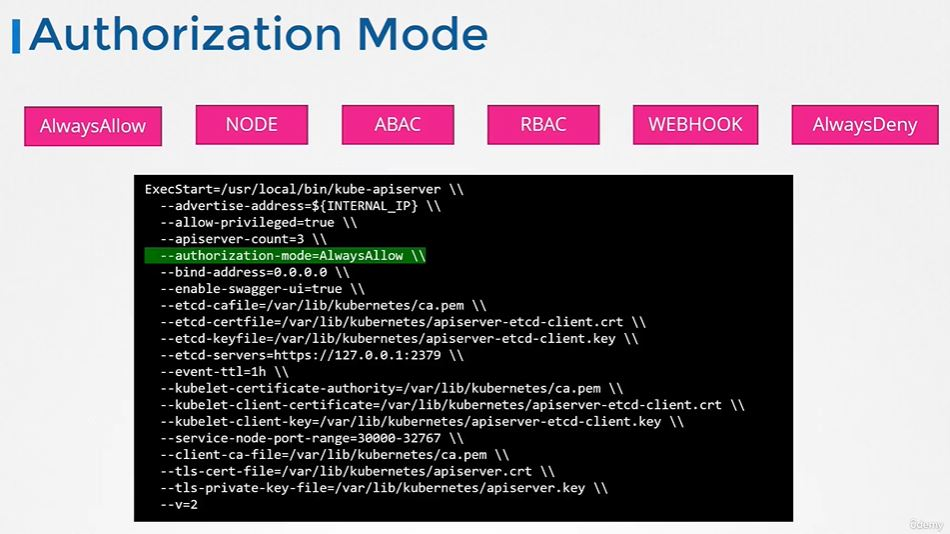Also We can provide comma-separated modes if we wish to use like below picture, so the request will come and will be checked one mode and after mode.
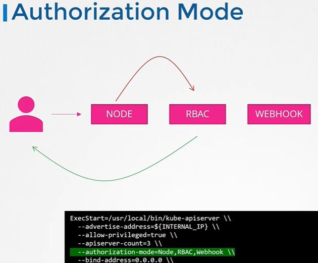 To the top